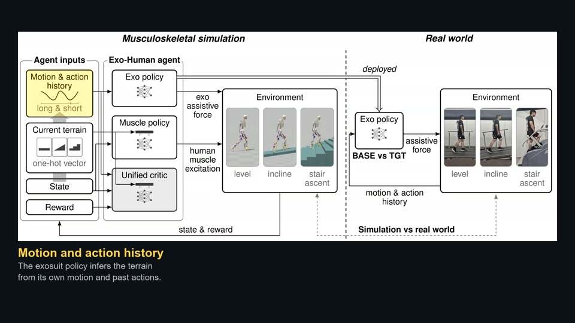

Chung-Ang University
2024 - 2025M.S. in Mechanical Engineering
GPA: 4.37 / 4.50
Assistive and Rehabilitation Robotics Lab
Advisor: Prof. Giuk Lee
I currently work at HUROTICS. I received my M.S. in Mechanical Engineering from Chung-Ang University, where I worked in the Assistive and Rehabilitation Robotics Lab under the supervision of Prof. Giuk Lee. Previously, I was an Equipment Engineer in the Memory Business of Samsung Electronics' Device Solutions (DS) Division, responsible for EUV lithography equipment. I also received my B.S. in Mechanical Engineering from Chung-Ang University.
Curriculum Vitae
Manuscript in preparation
Unified-critic multi-agent reinforcement learning for three walking environments, with sensor-history-based control and hardware validation.
M.S. in Mechanical Engineering
GPA: 4.37 / 4.50
Assistive and Rehabilitation Robotics Lab
Advisor: Prof. Giuk Lee
B.S. in Mechanical Engineering
GPA: 3.82 / 4.50
Pro
Equipment Engineer, Memory Business, Device Solutions (DS) Division
2020 LINC+ Capstone Design Award
Chung-Ang University LINC+
2019 CAU Engineering Academic Festival
Chung-Ang University